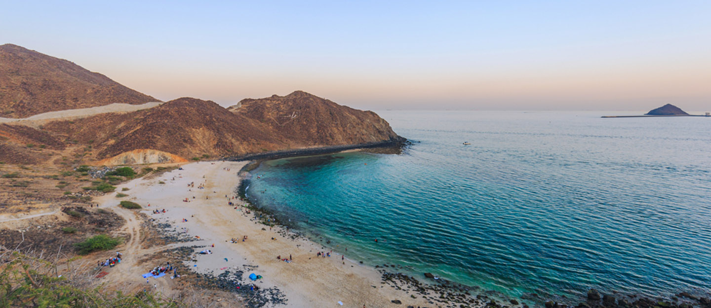

Khorfakkan is an excellent spot for a daycation. On Sharjah's east coast, this peaceful enclave is popular
for its crystal clear sea, golden beach, and craggy mountains that invite adventure.We are pleased to announce
that DPS Dubai will be partnering up with Odyessey Outings to host a camping field trip to Khor Fakkan Beach and
Mountains in Sharjah for grade 8.
The trip will be for 5 days from 20th to 25th July, 2023. Students will be staying at Royal Al Aqah Beach Hotel.
Students must pay an amount of AED 800 for the hotel stay and meals. Students must give their name to their class
teacher or the nearest student council representative. The last day to pay is 25th June, 2023 through RFID or the
SKIPLY app.
On 20th June, Students are required to report to the Multi-Purpose hall at 7am sharp. Students must bring their
devices and the necessities they will require for the trip. Transport services will be provided from the school
to Sharjah and back. However, Students must use their own transport to reach the school and go back home.
Only a maximum of 50 kids can apply for the trip, therefore, interested students are required to give their names
and pay as soon as possible. We hope to see you soon!